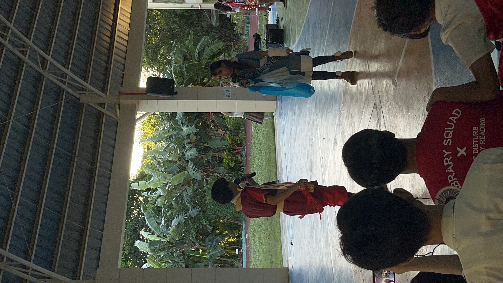
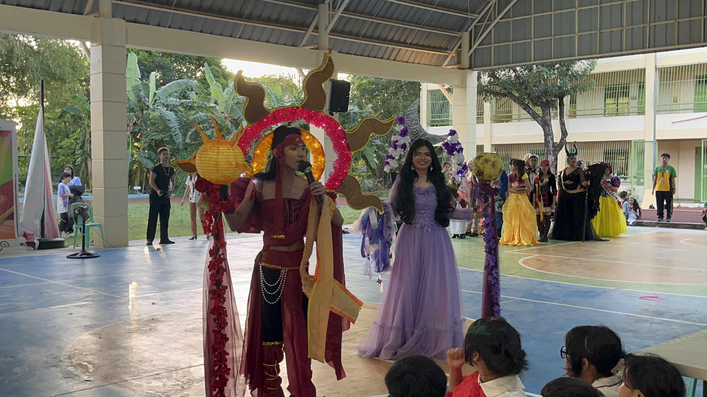
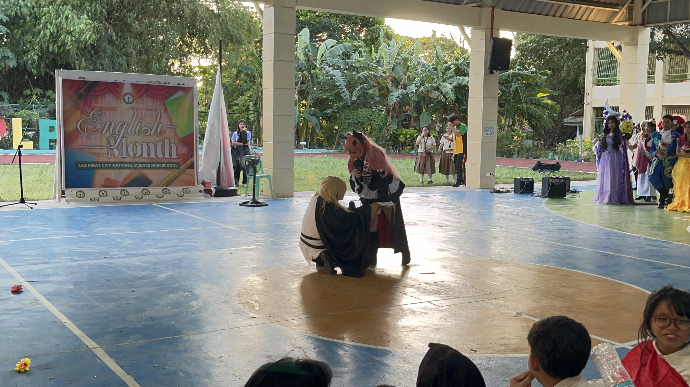

For the 2nd Quarter, many events have happened and on this page, I present the 3 main events that I have experienced or seen during this quarter.
The intramurals that took place in the multipurpose court of LPSCI were a phenomenon. It consisted of many events and many sports that were free to join by any student with the abilities capable to join. There were the ball games; volleyball, basketball, palarong pinoy, and many more! There were a total of 4 teams for JHS and SHS. The Green Magindaras, Red Santelmos, Blue Minokawas, and Yellow Bakunawas for the JHS. While the SHS had the Green Buzzers, Crimson Vulpixes, Golden Tigers, and Blue Phoenixes. The 4 videos shown in the table on the right side are the chants that were made by Senior High School teams to open the Intramurals.
| |
The Division Science and Technology Fair 2024 took place during October 2024. Fortunately, my classmates Dewi, Gwen, and I were chosen to represent the school in the Mathematics category. We had such an amazing experience during this time and we did not take any opportunity for granted. Although we may not have won a place on the podium, we will always keep the experiences and mistakes that we made to improve in the future. And, maybe even join another contest to have another chance to take home the win for LPSCI.
|  |  |
|  |  |
This year's Mr. and Ms. Booklandia was one of a kind. It was held during English Month 2024, at the multipurpose court of LPSCI. The contestants of each grade level in the junior high level gave it their all to portray their favorite characters in the hope of winning a place on the podium. There were so many beautiful and brilliant character portrayals in the event and it made you feel like they were the real characters. However, our section didn't win, but, that's okay, because you can't always win the crown.